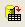

Daten aus einer Datenbank für die Analyse importieren
Zusammenfassung
Dieses Tutorial zeigt, wie Daten aus einer Datenbank in ein Origin-Arbeitsblatt mit Hilfe des SQL-Editors importiert werden. Danach werden einige Operationen wie Filter, Statistik etc. auf die Daten durchgeführt, um das gewünschte Ergebnis für die grafische Darstellung zu erhalten.
Die SQL-Datenbank, die hier verwendet wird, ist die AdventureWorks-Datenbank. Einzelheiten dazu, wie eine AdventureWorks-Datenbank verbunden wird, finden Sie auf der Webseite von CodePlex.
Origin-Version mind. erforderlich: Origin 9.0 SR0
Was Sie lernen werden
Dieses Tutorial zeigt Ihnen, wie Sie:
- zwei SQL-Abfragen der gleichen Datenbank in zwei Blätter einer Arbeitsmappe mit Hilfe des SQL-Editors importieren.
- den Datenfilter auf die Arbeitsblattdaten anwenden,
- deskriptive Spaltenstatistik durchführen,
- Diagramme wie Säulendiagramme etc. erstellen.
Schritte
Angenommen, Sie haben bereits einen SQL-Server mit dem Namen AdventureWorks2008 auf einem Server noho eingerichtet.
Daten aus einer Datenbank importieren
- Öffnen Sie ein neues Projekt. Öffnen Sie den SQL-Editor, indem Sie auf die Schaltfläche SQL-Editor öffnen auf der Symbolleiste Datenbankzugriff klicken.

- Wählen Sie im Menü Datei: Verbindungszeichenkette bearbeiten und geben Sie die Verbindungszeichenkette unten im Textfeld ein.
Provider=SQLOLEDB.1; Password=labtalk2015; Persist Security Info=TRUE; USER ID=CONNECT; Initial Catalog=AdventureWorks2008; DATA SOURCE=noho
- Klicken Sie auf die Schaltfläche Test, um zu prüfen, ob die Verbindung in Ordnung ist. Wenn er in Ordnung ist, klicken Sie auf die Schaltfläche OK, um die Verbindung zur Datenbank herzustellen.
- Klicken Sie im Feld oben links doppelt auf die Tabelle Production.Product, um den Tabellennamen zum rechten Feld hinzuzufügen.
- Klicken Sie auf die Schaltfläche Vorschau der Ergebnisdaten
 , um die Daten im unteren Bedienfeld anzuzeigen.
, um die Daten im unteren Bedienfeld anzuzeigen.
- Klicken Sie auf die Schaltfläche Daten in Arbeitsblatt importieren , um die Daten in der Tabelle in das aktive Arbeitsblatt zu importieren.
- Um Daten, basierend auf einer anderen SQL-Abfrage aus der gleichen Datenbank, in das neue Arbeitsblatt zu importieren, klicken Sie auf die Schaltfläche Minimieren auf der Titelleiste des Dialogs SQL-Editor, um ihn in eine Leiste zu verwandeln.
- Klicken Sie mit der rechten Maustaste auf die Registerkarte Sheet1 und wählen Sie Hinzufügen, um ein neues Blatt hinzuzufügen.
- Klicken Sie erneut auf die Schaltfläche zum Minimieren des Dialogs SQL-Editor, um den Dialog wieder zu erweitern. Sie können sehen, dass Production: Product noch im rechten Bedienfeld gezeigt wird. Sie können dies erstmal ignorieren.
- Wählen Sie Anfrage: LabTalk..., um den Dialog Einstellungen der Unterstützung von LabTalk zu öffnen. Aktivieren Sie das Kontrollkästchen Substitution durch LabTalk (%, $) aktivieren und geben Sie folgendes Skript in das Textfeld ein.
string strDateBegin1$ = "1/1/2003"; string strDateEnd1$ = "12/31/2003"; string strDateBegin2$ = "1/1/2004"; string strDateEnd2$ = "12/31/2004";
Der Dialog sieht folgendermaßen aus:
- Klicken Sie auf OK, um zum SQL-Editor zurückzukehren. Geben Sie dann das folgende SQL-Skript in das obere rechte Bedienfeld ein, um den vorhandenen Inhalt Production.Product zu ersetzen. Dieses Skript wird drei Spalten von der Datenbank abfragen, eine ist der Kategoriename des Produkt, die anderen beiden sind die Gesamtangaben der Zeilen für jede Kategorie für die Jahre 2003 und 2004.
SELECT TABLE2003.Name, TABLE2003.LineTotalFor2003, TABLE2004.LineTotalFor2004 FROM (SELECT Production.ProductCategory.Name, LINETOALANDNAME2003.LineTotalFor2003 FROM (SELECT SUM(SALEANDPRODUCT2003.LineTotal) AS LineTotalFor2003, Production.ProductSubcategory.ProductCategoryID FROM (SELECT SALEINFO2003.LineTotal, PRODUCTINFO2003.ProductSubcategoryID FROM (SELECT Sales.SalesOrderHeader.OrderDate, Sales.SalesOrderDetail.LineTotal, Sales.SalesOrderDetail.ProductID FROM Sales.SalesOrderHeader INNER JOIN Sales.SalesOrderDetail ON Sales.SalesOrderHeader.SalesOrderID=Sales.SalesOrderDetail.SalesOrderID WHERE Sales.SalesOrderHeader.OrderDate BETWEEN '%(strDateBegin1$)' AND '%(strDateEnd1$)') AS SALEINFO2003 INNER JOIN (SELECT Production.Product.ProductID, Production.Product.ProductSubcategoryID FROM Production.Product) AS PRODUCTINFO2003 ON SALEINFO2003.ProductID=PRODUCTINFO2003.ProductID) AS SALEANDPRODUCT2003 INNER JOIN Production.ProductSubcategory ON SALEANDPRODUCT2003.ProductSubcategoryID=Production.ProductSubcategory.ProductSubcategoryID GROUP BY Production.ProductSubcategory.ProductCategoryID) AS LINETOALANDNAME2003 INNER JOIN Production.ProductCategory ON LINETOALANDNAME2003.ProductCategoryID=Production.ProductCategory.ProductCategoryID) AS TABLE2003 INNER JOIN (SELECT Production.ProductCategory.Name, LINETOALANDNAME2004.LineTotalFor2004 FROM (SELECT SUM(SALEANDPRODUCT2004.LineTotal) AS LineTotalFor2004, Production.ProductSubcategory.ProductCategoryID FROM (SELECT SALEINFO2004.LineTotal, PRODUCTINFO2004.ProductSubcategoryID FROM (SELECT Sales.SalesOrderHeader.OrderDate, Sales.SalesOrderDetail.LineTotal, Sales.SalesOrderDetail.ProductID FROM Sales.SalesOrderHeader INNER JOIN Sales.SalesOrderDetail ON Sales.SalesOrderHeader.SalesOrderID=Sales.SalesOrderDetail.SalesOrderID WHERE Sales.SalesOrderHeader.OrderDate BETWEEN '%(strDateBegin2$)' AND '%(strDateEnd2$)') AS SALEINFO2004 INNER JOIN (SELECT Production.Product.ProductID, Production.Product.ProductSubcategoryID FROM Production.Product) AS PRODUCTINFO2004 ON SALEINFO2004.ProductID=PRODUCTINFO2004.ProductID) AS SALEANDPRODUCT2004 INNER JOIN Production.ProductSubcategory ON SALEANDPRODUCT2004.ProductSubcategoryID=Production.ProductSubcategory.ProductSubcategoryID GROUP BY Production.ProductSubcategory.ProductCategoryID) AS LINETOALANDNAME2004 INNER JOIN Production.ProductCategory ON LINETOALANDNAME2004.ProductCategoryID=Production.ProductCategory.ProductCategoryID) AS TABLE2004 ON TABLE2003.Name=TABLE2004.Name
- Klicken Sie auf die letzte Schaltfläche , um das Skript der SQL-Anfrage mit substituierten Variablen anzuzeigen. Klicken Sie auf die Schaltfläche Vorschau der Ergebnisdaten , um die Daten im unteren Bedienfeld anzuzeigen.
- Klicken Sie auf die Schaltfläche Daten in Arbeitsblatt importieren , um die Anfrage in das aktive Sheet2 zu importieren.
- Schließen Sie den SQL-Editor. Sie werden aufgefordert, die Änderung zu speichern. Sie können Nein wählen, da die Anfrageeinstellungen automatisch im entsprechenden Blatt gespeichert werden, wenn Sie auf die Schaltfläche Importieren klicken. Sie können auch Ja wählen, um die Anfrage des aktiven Blatts als eine ODQ-Datei zur späteren Verwendung zu speichern.
Datenfilter und Statistik
- Gehen Sie zum ersten Arbeitsblatt mit den importierten Daten aus Production.Product aus dem obigen Abschnitt.
- Markieren Sie Spalte I (Langname ist StandardCost) und fügen Sie dann einen Datenfilter zu dieser Spalte hinzu, indem Sie auf die Schaltfläche Datenfilter hinzufügen/entfernen auf der Symbolleiste Worksheet-Daten klicken.
- Ein Filtersymbol wird in der oberen linken Ecke des Spaltenkopfes angezeigt. Klicken Sie darauf und wählen Sie dann im Kontextmenü Größer als.
- Ein Dialog wird geöffnet. Behalten Sie den Standard-Wert mit 0 und klicken Sie auf OK.
- Fügen Sie einen Filter in Spalte P ein (Langname ist ProductLine) sowie die folgende Bedingung.
- Markieren Sie Spalte I und J (StandardCost and ListPrice) und wählen Sie dann im Menü Statistik: Deskriptive Statistik: Spaltenstatistik, um den Dialog Spaltenstatistik zu öffnen.
- Setzen Sie in dem aufgerufenen Dialog Spalte P als den Gruppierungsbereich. Sie können auf die dreieckige Schaltfläche klicken, um die Spalte aus der Liste auf der rechten Seite auszuwählen. Aktivieren Sie auf der Registerkarte Diagramme das Kontrollkästchen Boxdiagramme.
- Klicken Sie auf die Schaltfläche OK, um die Ergebnisse zu erzeugen.
Radardiagramm
- Gehen Sie zu Sheet2.
- Markieren Sie alle drei Spalten und wählen Sie im Menü Zeichnen: Spezialisiert: Radar, um ein Radardiagramm zu erstellen.
- Klicken Sie doppelt auf die Achse Clothing, um den Dialog Achsen zu öffnen. Bitte beachten Sie, dass der Vorgang unten aus Origin 2017 basiert.
-
Skalierung ist im linken Bedienfeld ausgewählt. Stellen Sie sicher, dass das Kontrollkästchen Die gleichen Optionen für alle Achsen verwenden deaktiviert ist. Wählen Sie Achse1 bis Achse4 im linken Bedienfeld. Setzen Sie Von auf 0 und wählen Sie Nach Anzahl der großen Hilfsstriche für Große Hilfsstriche mit einem Wert von 6. Klicken Sie auf die Schaltfläche Anwenden.

- Wechseln Sie bei fortwährender Auswahl von Achse1 bis Achse4 im linken Bedienfeld zur Registerkarte Beschriftung der Hilfsstriche. Die Option Vor Achse wird unter Beschriftung der Hilfsstriche zeigen gewählt. Bitte erweitern Sie die Auswahlliste und wählen Sie erneut Vor Achse, da wir die Option auf alle Achsen anwenden möchten.
- Setzen Sie Anzeige auf Dezimal: 1000 und Teilungsfaktor auf 1000000 (eine Million). Klicken Sie auf die Schaltfläche Anwenden.
- Kehren Sie jetzt zurück zur Registerkarte Skalierung. Wählen Sie Achse1 - Clothing nur links aus und ändern Sie den Wert für Bis auf 1,5. Wiederholen Sie diese Operation für Achse3 - Accessories und Achse4 - Components mit den Werten 0,7 bzw. 6. Hinweis: Da der Teilungsfaktor im vorherigen Schritt auf 1000000 gesetzt wurde, ist es nun viel einfacher, den Wert für Bis einzugeben.
- Klicken Sie auf OK.
Sie können sehen, dass für alle vier Kategorien die Gesamtangaben für 2004 größer sind als für 2003. Und Bikes ist am größten.